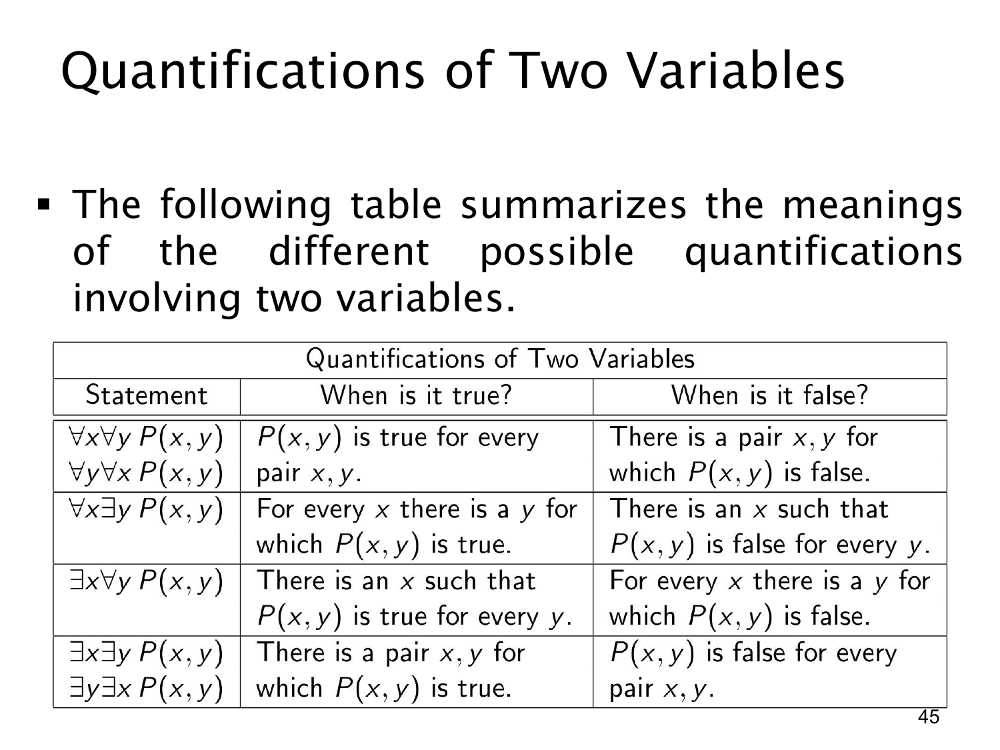

L1.2 · 第 45 页讲解原文
查看这一页课件

两变量量词总表：成立条件与失败条件
前四页逐行展示了两变量量词表，本页把四行的何时为真和何时为假完整放在一起。文字层只提取到标题，以下按原图表格整理：
| 形式 | 为真需要什么 | 为假需要什么 |
|---|---|---|
| ∀x∀yP(x,y) | 所有数对都满足 P | 找到一对 (x,y) 不满足 P |
| ∀x∃yP(x,y) | 每个 x 都至少有一个合适的 y | 找到一个 x，使任何 y 都不合适 |
| ∃x∀yP(x,y) | 找到一个 x，对所有 y 都合适 | 每个 x 都能找到某个使它失败的 y |
| ∃x∃yP(x,y) | 找到至少一对满足 P | 所有数对都不满足 P |
表中的“为假”一列就是对应原式的否定。例如第二行失败时，∃x∀y¬P(x,y) 为真；第三行失败时，∀x∃y¬P(x,y) 为真。两者外形相似，却代表不同的反例要求。
第一行的 ∀x∀y 与 ∀y∀x 等价，第四行的 ∃x∃y 与 ∃y∃x 也等价。中间两行混合量词时，不能只看“一个全称、一个存在”就当作相同：∀x∃y 可以为每个 x 挑不同的 y，∃x∀y 则需要一个固定 x 应付所有 y。
判断一道具体题目时，可以先把公式翻成表中的自然语言，再问“若它失败，要给出怎样的证据”。这样既有助于找反例，也可防止把量词顺序读反。